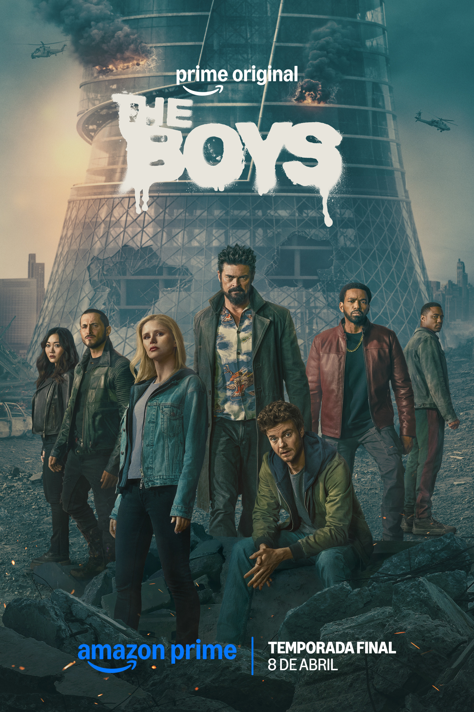

[SÉRIE]
The Boys
2019 • 5 Temporadas • Ação/Super-heróis/Sátira
Um grupo de pessoas comuns enfrenta super-heróis poderosos e corruptos que usam seus poderes para benefício próprio.
Criação: Eric Kripke
Elenco: Karl Urban, Jack Quaid, Antony Starr e Erin Moriarty
Nossa crítica
The Boys é uma série de super-heróis que apresenta uma visão bem diferente do gênero. A história acompanha um grupo de pessoas comuns que decide enfrentar super-heróis que, apesar de serem vistos como grandes heróis pela sociedade, usam seus poderes de forma irresponsável. O elenco é um dos grandes pontos positivos da série. Karl Urban e Jack Quaid se destacam como Billy Butcher e Hughie, enquanto Antony Starr faz um ótimo trabalho como Homelander, criando um personagem poderoso e bastante assustador. Os personagens também passam por mudanças importantes ao longo da história. A série mistura ação, humor e violência com uma crítica ao excesso de poder e à forma como os super-heróis são tratados como celebridades. Essa combinação deixa The Boys diferente de outras produções do gênero e faz a história ser interessante mesmo para quem já está acostumado com filmes e séries de super-heróis.
Veredito
The Boys é uma série divertida e diferente, com personagens marcantes, boas cenas de ação e uma história que consegue surpreender. A mistura de super-heróis, humor e crítica social faz a série se destacar e ser uma ótima escolha para quem gosta de algo menos tradicional.